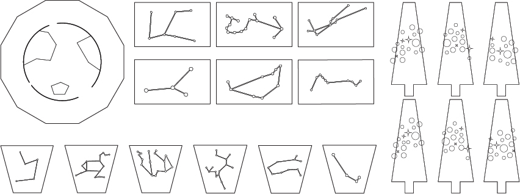
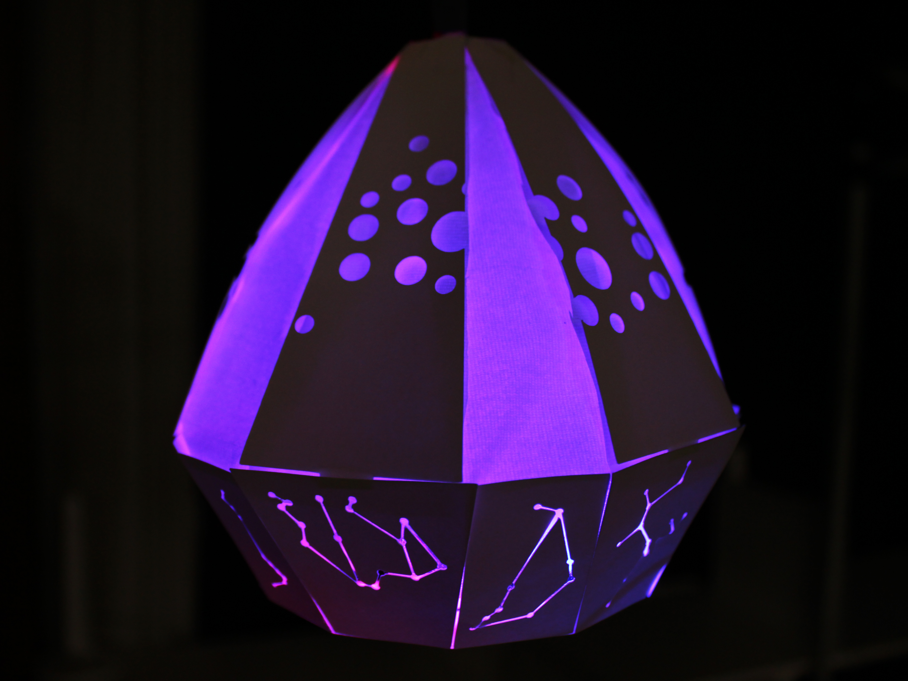

ランプシェード「見上げる」
2年次の授業である情報表現基礎にて、ランプシェードを作成しました。
担当箇所:デザイン/コーディング
使用ツール:Illustrator/Arduino Uno/カッティングプロッター
使用言語:Arduino
製作期間:2014/05~2014/06
星空をテーマに、素材を制作する
側面は光が星座の形と天の川をイメージした複数の円に、底面は光が地球の形になるようカッティングプロッターで裁断しました。
それぞれのメンバーがどんな仕事を持っているのかを管理し、わからない点があった時は持っている技術て助け合いをしながらの作業でした。
Arduinoで光に変化をつける
Arduino Unoを使用し、距離センサーを下の面に設置しています。距離センサーに手を近づけると、色がピンクから紫に変わるようなプログラムを作りました。